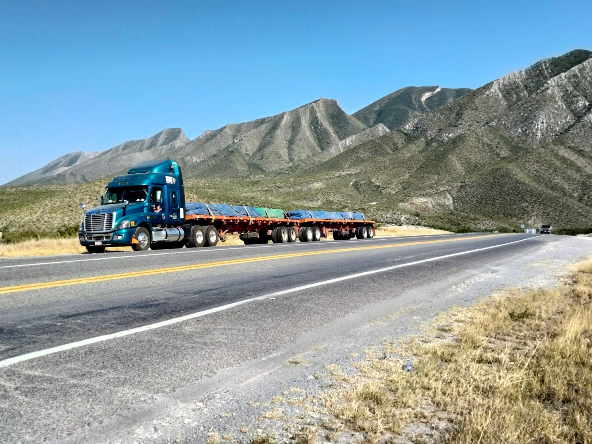
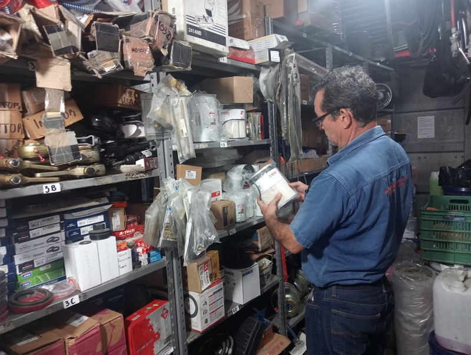
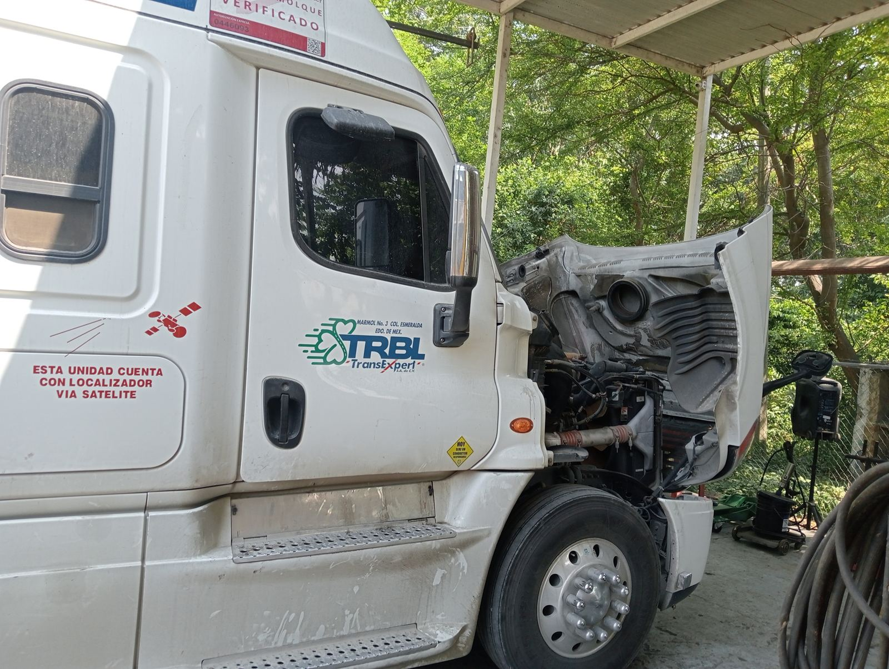
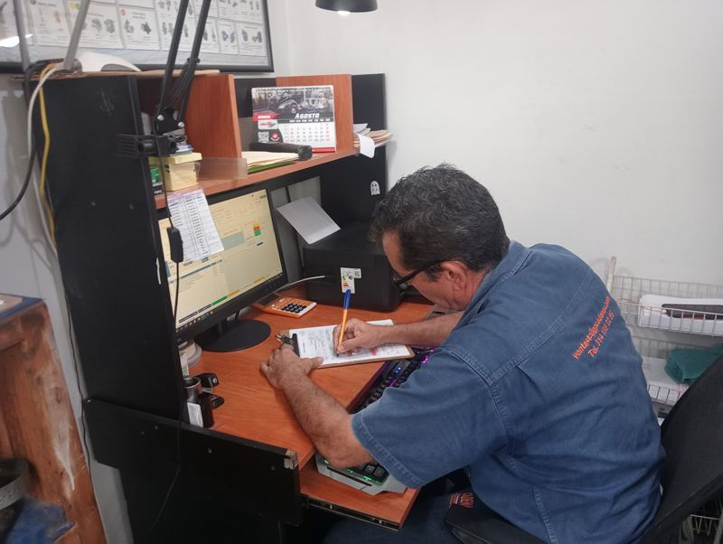

Manzanillo, Colima · Desde 2016
Transporte de contenedores desde el puerto de Manzanillo a toda la república, taller especializado en tractocamiones y refaccionaria abierta hasta las 9 PM.

Local y foráneo, contenedores de todos los tamaños.

Mantenimiento y reparación con personal capacitado.

Tu camión no se queda parado por falta de refacción.
01 · Transporte
Contamos con unidades de modelo reciente en excelentes condiciones mecánicas, monitoreadas en tiempo real vía GPS, y operadores capacitados para cumplir con nuestro compromiso contigo.
Envíos dentro del estado de Colima, principalmente desde el puerto de Manzanillo hacia diversos puntos del estado.
Cobertura nacional bajo solicitud del cliente, con contenedores de todos los tamaños y rastreo GPS.


Rastreo satelital en tiempo real, monitoreo constante y máxima seguridad en el trayecto.
Refrigerados, estándar y carga especializada, adaptándonos a cada necesidad logística.
Protocolos de seguridad reforzada, personal capacitado y tecnología para un servicio puntual.

02 · Taller
Personal capacitado y equipo de última tecnología para mantener tu unidad en óptimas condiciones. Selecciona los servicios que necesitas y te enviamos la consulta por WhatsApp.
03 · Refaccionaria
Sabemos que las urgencias no esperan. Arma tu lista y pregunta precio y existencia en un solo mensaje.
No encontramos esa refacción en el catálogo, pero pregúntanos: es muy probable que la tengamos.
Nosotros
Desde el inicio de operaciones en 2016, en Transportes de Carga Cadena's estamos comprometidos en brindar servicios logísticos de excelencia: puntualidad, confiabilidad, unidades nuevas con rastreo satelital y mejora continua con base en nuestro sistema de gestión de calidad.
Nos diferenciamos al establecer como prioridad el transporte de tus mercancías y la renovación permanente de nuestra flota.

Ofrecer servicios especializados de transporte terrestre con altos estándares de calidad y seguridad, buscando la excelencia mediante la mejora continua y contribuyendo al desarrollo de colaboradores, clientes, socios, proveedores y la sociedad.
Ser una empresa líder nacional en servicios de transporte terrestre, anticipándonos a las necesidades de nuestros clientes para superar sus expectativas y los estándares del mercado.



Contacto